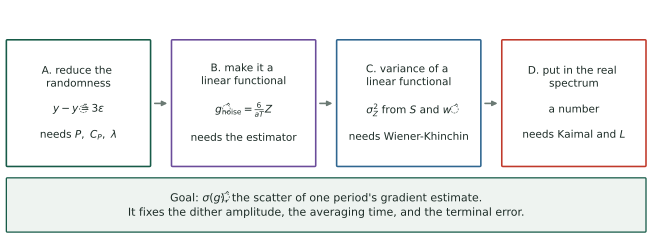
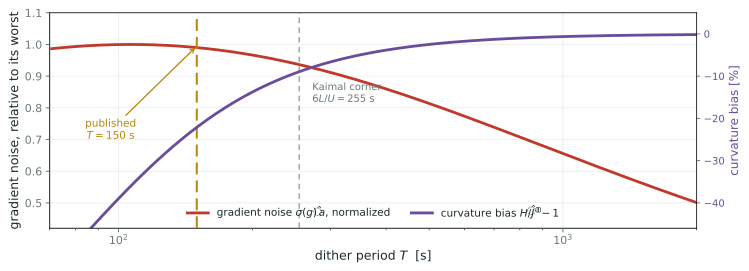

Wind as a Stochastic Process
Where the gradient-estimate noise comes from, derived from the inflow spectrum rather than measured
Robot Control Lab · Systems Engineering · UT Dallas
The number we are trying to compute
Extremum seeking perturbs the torque gain and correlates the measured power against the perturbation. One period of that correlation returns one number, \(\hat g\), an estimate of the slope of the objective. Because the wind is random, \(\hat g\) is random.
\[\sigma(\hat g) := \text{standard deviation of one period's gradient estimate}\]
it fixes the probe size
Bias grows as \(a^2\), scatter as \(\sigma(\hat g)/a\). Balancing them needs \(\sigma(\hat g)\).
it fixes the averaging
How many periods before the estimate is usable is set by how noisy one period is.
it fixes the terminal error
The scatter the loop settles into is \(\sigma(\hat g)\) divided by the curvature.
Every value quoted for it so far has been measured — read off a simulation or bounded from a published table. None was predicted. This deck computes it.
Why it is not a one-line calculation
\[\hat g = \frac{1}{T}\int_0^T \ln P(t)\,\frac{2}{a}\sin\omega t\;dt\]
\(P\) depends on the wind, which is a random process, not a random number. So \(\hat g\) is an integral of a random process against a deterministic weight, and its variance depends on how the wind’s randomness is distributed in time — a gust lasting an hour and a gust lasting a second contribute quite differently to the same integral.
Three things are therefore needed, and none of them is optional:
- a way to describe how a random process distributes its variance over timescales — that is the spectral density;
- a model of which spectrum turbulence actually has — that is Kaimal;
- a rule for pushing a process through a linear integral — that is Wiener-Khinchin plus Fubini.
The route

Four links. A shows that although log-power depends on the wind three separate ways, at the optimum only one survives. B uses that to write the estimator’s noise as a single integral of one random process. C is the general rule for the variance of such an integral. D substitutes the spectrum turbulence has and produces a number. Each is stated, then checked against simulation at the end.
Link A: reduce the randomness
Log-power depends on the wind three separate ways. At the optimum only one of them survives, and that is what makes the rest tractable.
What we need from the turbine
A wind turbine below rated wind speed. Write \(\bar V\) for the mean wind speed, \(R\) for the rotor radius, \(\Omega\) for the rotor angular speed, \(\rho\) for air density and \(A = \pi R^2\) for the swept area. Define the tip-speed ratio and the power coefficient:
\[\lambda := \frac{R\Omega}{V}, \qquad P = \tfrac12\rho A V^3\,C_P(\lambda)\]
\(C_P\) is a property of the blades, with a single maximum \(C_P^{\max}\) at \(\lambda = \lambda^\star\). The controller’s only actuator is the torque gain \(u\) in the generator-torque law \(\tau_g = u\Omega^2\); setting \(\dot\Omega = 0\) makes the rotor rest where \(C_P(\lambda)/\lambda^3 = c\,u\) for a rotor constant \(c\), so \(u\) selects an equilibrium \(\lambda_{\text{eq}}(u)\).
Define the objective \(J(u) := \ln C_P\big(\lambda_{\text{eq}}(u)\big)\), and write \(J'\), \(J''\) for its first two derivatives in \(u\). The optimum \(u^\star\) is where \(J'(u^\star) = 0\), equivalently \(\lambda_{\text{eq}}(u^\star) = \lambda^\star\). Numerically, for the NREL 5 MW rotor at \(\bar V = 8\) m/s, \(J'' = -1.41\times10^{-13}\) in SI units.
The decomposition
Split the wind into a mean and a fluctuation about it:
\[V(t) = \bar V\big(1 + \varepsilon(t)\big), \qquad \varepsilon(t) := \frac{\tilde v(t)}{\bar V}, \qquad \mathrm{TI} := \frac{\sigma_{\tilde v}}{\bar V} = \sigma_\varepsilon\]
\(\tilde v\) is the fluctuating part in m/s, \(\varepsilon\) its dimensionless counterpart, and \(\mathrm{TI}\) the turbulence intensity, \(0.10\) in the case studied here.
\(\varepsilon\) is small
\(\sigma_\varepsilon = 0.10\), so a series in \(\varepsilon\) converges quickly and second-order terms contribute about \(1\%\).
\(\varepsilon\) is dimensionless
Its spectrum is \(\mathrm{TI}^2\) times a shape depending only on \(L/\bar V\), so results scale cleanly in wind speed.
Link A, executed
From the definitions, \(y = \ln P = \ln(\tfrac12\rho A) + 3\ln V + \ln C_P(\lambda)\). Substituting the decomposition into the middle term:
\[3\ln V = \underbrace{3\ln\bar V}_{\text{constant}} + 3\varepsilon \;\underbrace{-\;\tfrac32\varepsilon^2 + O(\varepsilon^3)}_{\text{magnitude}\ \sim1\%}\]
The last term also fluctuates, because \(\lambda\) does. Expanding about the mean operating point \(\bar\lambda := \mathbb{E}[\lambda]\), and writing \(\delta\lambda := \lambda - \bar\lambda\):
\[\ln C_P(\bar\lambda + \delta\lambda) = \ln C_P(\bar\lambda) + \frac{C_P'(\bar\lambda)}{C_P(\bar\lambda)}\,\delta\lambda + O(\delta\lambda^2)\]
If the loop has converged, \(\bar\lambda = \lambda^\star\) and \(C_P'(\bar\lambda) = 0\), so the linear term vanishes. Since \(\delta\lambda\) is itself \(O(\varepsilon)\), the remainder is \(O(\varepsilon^2)\). Therefore \[y(t) - \mathbb{E}[y] = 3\varepsilon(t) + O(\varepsilon^2)\] at the optimum: one term, one spectrum. Away from the optimum the \(C_P'\delta\lambda\) term returns and this derivation does not apply.
Link B: make it a linear functional
Link A leaves a single random process. This writes the estimator’s noise as one integral of it.
What we need from the estimator
Extremum seeking perturbs the knob with a sinusoid of amplitude \(a\) and period \(T\), and correlates the measured log-power against it over exactly one period:
\[u(t) = u_n + a\sin\omega t, \qquad \omega := \frac{2\pi}{T}, \qquad f_1 := \frac{1}{T} = \frac{\omega}{2\pi}\]
\[y(t) := \ln P(t), \qquad \hat g_n := \frac{1}{T}\int_0^T y(t)\,\frac{2}{a}\sin\omega t\;dt\]
\(\hat g_n\) is an estimate of \(J'(u_n)\). Its mean error is the finite-amplitude bias \(\tfrac{a^2}{6}J'''\); its scatter, which is what this deck computes, comes entirely from the wind. Published values for the NREL 5 MW case: \(T = 150\) s and \(a = 13.6\%\) of \(u^\star\).
Link B, executed
Insert \(y = \mathbb{E}[y] + 3\varepsilon + O(\varepsilon^2)\) into the estimator. The constant integrates against \(\sin\omega t\) to zero over a whole period, so
\[\hat g_{\text{noise}} = \frac{6}{aT}\,Z, \qquad Z := \int_0^T \varepsilon(t)\,w(t)\,dt, \qquad w(t) := \begin{cases}\sin\omega t, & 0\le t\le T\\ 0,&\text{otherwise}\end{cases}\]
\(Z\) is a scalar random variable. It is not a \(z\)-transform variable, and no moment of inertia appears anywhere in this deck.
\(Z\) is linear in \(\varepsilon\), so its variance follows from \(R\) alone:
\[\operatorname{Var}(Z) = \mathbb{E}\!\left[\iint_{[0,T]^2}\! w(t)w(s)\,\varepsilon(t)\varepsilon(s)\,dt\,ds\right] = \iint_{[0,T]^2}\! w(t)\,w(s)\,R(t-s)\,dt\,ds\]
The exchange is Fubini, and it is licensed: \(|R(\tau)| \le R(0) = \sigma_\varepsilon^2\) by Cauchy-Schwarz, \(|w| \le 1\), and the domain has measure \(T^2\), so the integrand is absolutely integrable with \(\iint|w\,w\,R| \le \sigma_\varepsilon^2T^2 < \infty\).
Link C: the variance rule
Link B leaves an integral of a random process against a fixed weight. This is the general rule for its variance, and it needs two definitions first.
The power spectral density
Assume \(\varepsilon\) is zero-mean and wide-sense stationary: \(\mathbb{E} [\varepsilon(t)] = 0\) for all \(t\), and \(\mathbb{E}[\varepsilon(t)\varepsilon(s)]\) depends on \(t - s\) alone. Define the autocovariance and, as its Fourier transform, the power spectral density:
\[R(\tau) := \mathbb{E}\big[\varepsilon(t)\,\varepsilon(t+\tau)\big], \qquad S^{2s}(f) := \int_{-\infty}^{\infty}\! R(\tau)e^{-i2\pi f\tau}d\tau, \qquad R(\tau) = \int_{-\infty}^{\infty}\! S^{2s}(f)e^{i2\pi f\tau}df\]
The pair is the Wiener-Khinchin theorem, which holds whenever \(R \in L^1(\mathbb{R})\). Setting \(\tau = 0\) in the inversion gives \(R(0) = \sigma_\varepsilon^2 = \int S^{2s}df\), and more generally \(\int_a^b S^{2s}df\) is the variance contributed by frequencies in \([a,b]\). That is the only property of \(S^{2s}\) used below.
Two conventions, and a factor of two
\(R\) is real and even, so \(S^{2s}\) is real and even. Tables therefore fold the negative frequencies onto the positive ones and quote the one-sided density:
\[S(f) := 2\,S^{2s}(f)\quad (f>0), \qquad\text{so}\qquad \sigma_\varepsilon^2 = \int_{-\infty}^{\infty}\!S^{2s}(f)\,df = \int_0^{\infty}\! S(f)\,df\]
Everything quoted from a standard is one-sided; every integral over all of \(\mathbb{R}\) below needs two-sided. The conversion \(S^{2s} = \tfrac12 S\) is applied once, explicitly, at the point of use.
Units follow from the definition: \(\varepsilon\) is dimensionless, so \([R] = 1\), \([S] = \text{Hz}^{-1}\), and \(\int S\,df\) is dimensionless as it must be.
Link C, executed
Substitute \(R(\tau) = \int_{\mathbb{R}} S^{2s}(f)e^{i2\pi f\tau}df\) and exchange once more:
\[\operatorname{Var}(Z) = \int_{\mathbb{R}} S^{2s}(f)\, \underbrace{\left[\int_0^T\! w(t)e^{-i2\pi ft}dt\right] \overline{\left[\int_0^T\! w(s)e^{-i2\pi fs}ds\right]}}_{=\;|\hat w(f)|^2}\;df\]
Licensed the same way: \(\iiint |S^{2s}(f)w(t)w(s)|\,dt\,ds\,df \le \sigma_\varepsilon^2 T^2 < \infty\) since \(\int|S^{2s}| = \sigma_\varepsilon^2\). The result is an ordinary Lebesgue integral of a deterministic function. No stochastic integral is involved. The Stieltjes-type object lives in the Cramér representation \(\varepsilon(t)=\int e^{i2\pi ft}dZ_\varepsilon(f)\), which is one route to Wiener-Khinchin but is not needed here.
Parseval fixes the total weight of the window, which is used as a check below:
\[\int_{\mathbb{R}}|\hat w(f)|^2 df = \int_0^T \sin^2\!\omega t\,dt = \frac{T}{2}\]
A shortcut that does not apply here

If \(S^{2s}\) were constant across the support of \(|\hat w|^2\) it could be taken outside, and Parseval would finish the job:
\[\operatorname{Var}(Z) \;\approx\; S^{2s}(f_1)\cdot\frac{T}{2}\cdot 2 \;=\; S_\varepsilon(f_1)\,\frac{T}{4} \qquad\text{(valid iff } S \text{ is flat over the lobe)}\]
The condition fails here. \(w\) is one period of a sine, so \(|\hat w|^2\) has its main lobe on \([0, 2f_1]\) — a \(100\%\) relative bandwidth — and across that interval \(S_\varepsilon\) falls by a factor of \(S_\varepsilon(0)/S_\varepsilon(2f_1) = 11.8\) at \(T = 150\) s.
Link D: the spectrum turbulence has
Link C’s rule needs a spectrum. This is the one measured for the atmospheric boundary layer, and substituting it finishes the calculation.
The integral length scale
One more definition before the model, because it is the only free parameter in it. The normalized autocovariance and the integral time and length scales are
\[\varrho(\tau) := \frac{R(\tau)}{R(0)}, \qquad \mathcal{T} := \int_0^{\infty}\!\varrho(\tau)\,d\tau, \qquad L := \bar V\,\mathcal{T}\]
\(\mathcal{T}\) is the lag over which the signal retains memory of itself, and \(L = \bar V\mathcal{T}\) converts it to a length by Taylor’s frozen-turbulence hypothesis: eddies of size \(L\) are carried past the rotor at speed \(\bar V\).
\(L\) is fixed by the spectrum at zero frequency. From \(S(f) = 4\int_0^\infty R(\tau)\cos(2\pi f\tau)\,d\tau\) for real even \(R\), \[S(0) = 4\int_0^{\infty}\! R(\tau)\,d\tau = 4\sigma^2\mathcal{T} = \frac{4L}{\bar V}\,\sigma^2\] so any spectrum with integral scale \(L\) must have that value at \(f = 0\). That is where the prefactor in the next slide comes from.
The Kaimal spectrum
A specific one-parameter model for \(S\), fitted by Kaimal and co-workers to the 1968 Kansas boundary-layer measurements and adopted by IEC 61400-1 as its normal turbulence model. In terms of \(\varepsilon\):
\[\boxed{\;S_\varepsilon(f) = \mathrm{TI}^2\;\frac{4L/\bar V}{\big(1+6fL/\bar V\big)^{5/3}}\;} \qquad f \ge 0,\ \text{one-sided}\]
Every piece is forced or measured, none is free:
\(4L/\bar V\)
The value at \(f = 0\) that the previous slide requires of any spectrum with integral scale \(L\).
exponent \(5/3\)
Kolmogorov’s inertial-subrange law, \(S\propto f^{-5/3}\), which the data follow above the corner.
the \(6\)
The one empirical number: it places the corner, at \(f = \bar V/6L\).
It is correctly normalized: substituting \(x = 6fL/\bar V\), \(\int_0^{\infty}\! S_\varepsilon df = \tfrac{2}{3}\int_0^\infty (1+x)^{-5/3}dx = \tfrac23\cdot\tfrac32\,\mathrm{TI}^2 = \mathrm{TI}^2\), as the definition of \(\mathrm{TI}\) demands.
What it looks like, and where the dither sits

IEC fixes \(L\) from the hub height \(z\) alone: \(L = 8.1\Lambda_1\) with \(\Lambda_1 = 0.7\min(z,60)\) m. For the NREL 5 MW rotor, \(z = 90\) m gives \(\Lambda_1 = 42\) m and \(L = 340\) m.
At \(\bar V = 8\) m/s that puts the corner at \(\bar V/6L = 3.9\times10^{-3}\) Hz. The right panel plots \(fS_\varepsilon\), whose area on a logarithmic axis is variance per decade: it peaks at \(\bar V/4L = 5.9\times10^{-3}\) Hz. The published dither, \(f_1 = 1/150\,\text{s} = 6.7\times10^{-3}\) Hz, sits directly on that peak — which is the design point the last part of this deck revisits.
The answer, and what the shortcut would have cost
Evaluating the exact integral numerically against the shortcut, and both against a direct simulation of the turbine under a synthesized Kaimal inflow:
| \(T\) | exact \(\operatorname{Var}(Z)\) | shortcut | \(\sigma(\hat g)\) exact | shortcut | simulated | exact/sim |
|---|---|---|---|---|---|---|
| \(150\) s | \(15.65\) | \(12.18\) | \(5.21{\times}10^{-7}\) | \(4.59{\times}10^{-7}\) | \(5.48{\times}10^{-7}\) | \(0.95\) |
| \(300\) s | \(53.08\) | \(45.73\) | \(4.80{\times}10^{-7}\) | \(4.45{\times}10^{-7}\) | \(5.09{\times}10^{-7}\) | \(0.94\) |
| \(600\) s | \(152.9\) | \(141.3\) | \(4.07{\times}10^{-7}\) | \(3.91{\times}10^{-7}\) | \(3.83{\times}10^{-7}\) | \(1.06\) |
\[\boxed{\;\sigma(\hat g) = \frac{6}{aT}\sqrt{\int_{\mathbb{R}}\tfrac12 S_\varepsilon(f)\,|\hat w(f)|^2\,df}\;}\] Agreement with simulation is within \(\mathbf{6\%}\) across a fourfold range of \(T\), with no fitted parameter. The shortcut under-predicts by \(11\) to \(13\%\), because it samples \(S\) at \(f_1\) while the window also collects the larger \(S\) below \(f_1\).
Does it hold?
Each link checked separately against a simulation of the full nonlinear turbine, so a failure can be attributed to one link rather than to the chain.
How the check is set up
The turbine is integrated with an adaptive solver under a synthesized Kaimal inflow, \(240\) periods of \(T = 150\) s at \(\bar V = 8\) m/s, realized \(\mathrm{TI} = 9.86\%\). The gain is held at \(u^\star\) and the loop is open, so what is measured is the estimator alone.
testing A
Record \(y(t)\) and the \(\varepsilon(t)\) that drove it. Regress one on the other: the slope should be \(3\).
testing C
Form \(Z = \int\varepsilon w\,dt\) each period, take its sample variance, compare with \(\int S^{2s}|\hat w|^2 df\).
testing D
Take the sample standard deviation of \(\hat g\) itself and compare with \(\tfrac{6}{aT}\sqrt{\operatorname{Var}Z}\).
Link B is an identity given A, not an approximation, so there is nothing to test in it separately: it is implied by A holding and D holding.
Every link holds

| link | claim | predicted | measured | ratio |
|---|---|---|---|---|
| A | \(y-\bar y = 3\varepsilon\) | slope \(3\) | slope \(3.083\), \(r = 0.9915\) | \(1.037\) |
| C | \(\operatorname{Var}Z = \int S^{2s}\vert\hat w\vert^2 df\) | \(15.65\) | \(15.01\) | \(0.959\) |
| D | \(\sigma(\hat g) = \tfrac{6}{aT}\sqrt{\operatorname{Var}Z}\) | \(5.21{\times}10^{-7}\) | \(5.23{\times}10^{-7}\) | \(1.005\) |
All three within \(5\%\), and the assembled prediction within \(0.5\%\). The \(3.7\%\) excess on A is the \(O(\varepsilon^2)\) term the expansion drops, which at \(\mathrm{TI} = 0.10\) should be of exactly that size.
Consequences
One design rule, and one discrepancy the derivation does not remove.
The dither period has a worst case

Below the corner \(S_\varepsilon \propto f^{-5/3}\), so \(\sigma(\hat g)\propto T^{1/3}\); above it \(S_\varepsilon\) is flat and \(\sigma(\hat g)\propto T^{-1/2}\). The turnover is therefore a maximum, near \(T = 6L/\bar V = 255\) s.
The published \(T = 150\) s sits close to that maximum. Both longer and shorter periods reduce the noise, and longer also reduces the second-harmonic curvature bias, which is \(\hat H/J'' - 1 = -(1+(2\omega\tau_{\text{rotor}})^2)^{-1}+1\). At \(T = 600\) s the gradient noise is \(15\%\) lower and the curvature bias moves from \(-21\%\) to \(-2\%\).
What the derivation does not fix
Feed the published configuration through the exact expression: \(T = 150\) s, \(a = 13.6\%\) of \(u^\star\), \(J'' = -1.41\times10^{-13}\), and an effective averaging of \(N_{\text{eff}} = 3\) periods from the reported settling time. Using \(\sigma(u) = \sigma(\hat g)/(|J''|\sqrt{N_{\text{eff}}})\) and \(d\ln\lambda/d\ln u = -1/3\):
\[\sigma(u) = 0.96\,u^\star \qquad\Longrightarrow\qquad \sigma_\lambda = 2.4 \qquad\text{against}\qquad \sigma_\lambda \lesssim 0.14 \ \text{from the published table}\]
inflow spectrum: eliminated
Reconciling would need \(S_\varepsilon\) smaller by \(292\times\), i.e. \(\mathrm{TI} = 0.58\%\) against the stated \(10\%\).
power signal: eliminated
Demodulating generator power \(u\Omega^3\) rather than aerodynamic \(\tau_{\text{aero}}\Omega\) changes \(\sigma(\hat g)\) by \(2\%\) in simulation.
The factor of \(17\) is now analytic, independent of the solver, and two explanations are gone. What remains: \(|J''|\) wrong by that factor, an effective averaging far longer than the reported settling time permits, or an inflow genuinely far quieter at \(f_1\) than IEC Kaimal at \(10\%\). Figure 3 of [CLR19] plots the inflow PSD; its value at \(6.7\times10^{-3}\) Hz decides among them.
Where this leaves the program
established
\(\sigma(\hat g)\) from the inflow spectrum to \(6\%\), nothing fitted. The \(\lambda\) channel drops out at the optimum and only there.
actionable
\(T = 150\) s is near the worst available dither period. Lengthening it reduces gradient noise and curvature bias together.
open
A factor of \(17\) against the published scatter, with two of four candidate explanations eliminated.
References
[R17] M. A. Rotea, Logarithmic power feedback for extremum seeking control of wind turbines, IFAC-PapersOnLine 50(1) (2017) 4504–4509. doi:10.1016/j.ifacol.2017.08.381
[CLR19] U. Ciri, S. Leonardi & M. A. Rotea, Evaluation of log-of-power extremum seeking control for wind turbines using large eddy simulations, Wind Energy 22 (2019) 992–1002. doi:10.1002/we.2336
[KR22] D. Kumar & M. A. Rotea, Wind turbine power maximization using log-power proportional-integral extremum seeking, Energies 15 (2022) 1004. doi:10.3390/en15031004
[KR24] D. Kumar & M. A. Rotea, Optimal tip-speed ratio for degraded blades, Wind Energy Science 9 (2024) 2133–2146. doi:10.5194/wes-9-2133-2024
[RKAJ24] M. A. Rotea, D. Kumar, E. J. Aju & Y. Jin, Multi-row extremum seeking for wind farm power maximization, J. Phys. Conf. Ser. 2767 (2024) 032043. doi:10.1088/1742-6596/2767/3/032043
[MGR24] S. P. Mulders, N. Gallo & M. A. Rotea, Analysis of extremum seeking control for wind turbine torque controller optimization by aerodynamic and generator power objectives, ACC (2024). arXiv:2407.08059
[GKN12] A. Ghaffari, M. Krstić & D. Nešić, Multivariable Newton-based extremum seeking, Automatica 48 (2012) 1759–1767. doi:10.1016/j.automatica.2012.05.059
[S00] J. C. Spall, Adaptive stochastic approximation by the simultaneous perturbation method, IEEE Trans. Automat. Contr. 45 (2000) 1839–1853. PDF
[LM23] C. Lauand & S. Meyn, Quasi-stochastic approximation: design principles with applications to extremum seeking control, IEEE Control Systems Magazine 43 (2023). doi:10.1109/MCS.2023.3291884
[A22] N. J. Abbas et al., A reference open-source controller for fixed and floating offshore wind turbines, Wind Energy Science 7 (2022) 53–73. doi:10.5194/wes-7-53-2022
[J09] J. Jonkman, S. Butterfield, W. Musial & G. Scott, Definition of a 5-MW reference wind turbine, NREL/TP-500-38060 (2009). PDF · [IEC] IEC 61400-1 ed. 3, normal turbulence model.
Companion to Extremum Seeking Control of Wind Turbines.
← Wind Turbine Control · The Wind as a Process